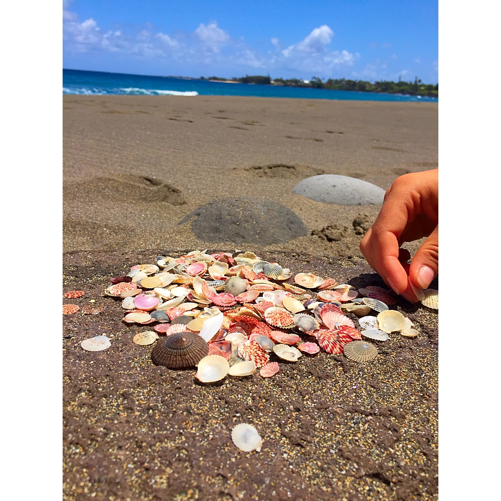

We all take time to heal
forget what we can't appeal
regret what we don't feel
indulge in a world we find real
go deep within and break the seal
a mask is no true shield
we find doom from the weapons we wield
find solace in a moonlit field
find solace by a rushing river
the morning dew, a soft wind shiver
the moment before a kiss, warm lips quiver
the stars endless when the moon's a sliver
warm rain among waterfall mist
the sunset and clouds, a vivid tryst
the feeling of gazing into an abyss
the playful magnetism that fuels each kiss
engaging dreams before a shift
porous pain fostered by a rift
small hands find sands to sift
seeking colorful seashells to gift
can we let go of the things we believe?
create a world, when we're ready we'll leave
find beauty in all we perceive
let go of what we used to conceal
interactions fateful and real
gratitude for all we can feel
after all, we take time to heal
 ___
| Number of Instances where word rhymes with: | |
|---|---|
| heal | 9 |
| shield | 3 |
| river | 4 |
| mist | 2 |
| kiss | 2 |
| shift | 4 |
| believe | 3 |
Concepts touched on by poem:
* the feelings that each of the events inspire
* connection between humans on a deep and genuine level
* relation through vulnerability